Módulo de la Dirección de Tránsito y Transporte — Municipalidad de Eldorado
El Registro de Vehículos es un sistema para inscribir formalmente los vehículos que prestan servicio de transporte en la ciudad de Eldorado. Permite registrar dos categorías:
El módulo es público para registrar (cualquier ciudadano/empresa puede cargar su vehículo) y restringido para administrar (solo personal autorizado puede ver listados o eliminar registros).
El módulo está disponible desde el sitio municipal, en la siguiente ruta:
Inicio → Gobierno → Sec. De Gobierno → Dir. De Tránsito Y Transporte → Registro Vehículos
| Página | URL | Acceso |
|---|---|---|
| Index del módulo | /gobierno/secretaria-gobierno/transito-y-transporte/registro-vehiculos | Público |
| Registro de Colectivos | /.../registro-vehiculos/colectivo | Solo admin |
| Registro de Transporte Especializado | /.../registro-vehiculos/transporte-especializado | Solo admin |
| Panel de Administración | /.../registro-vehiculos/admin | Solo admin |
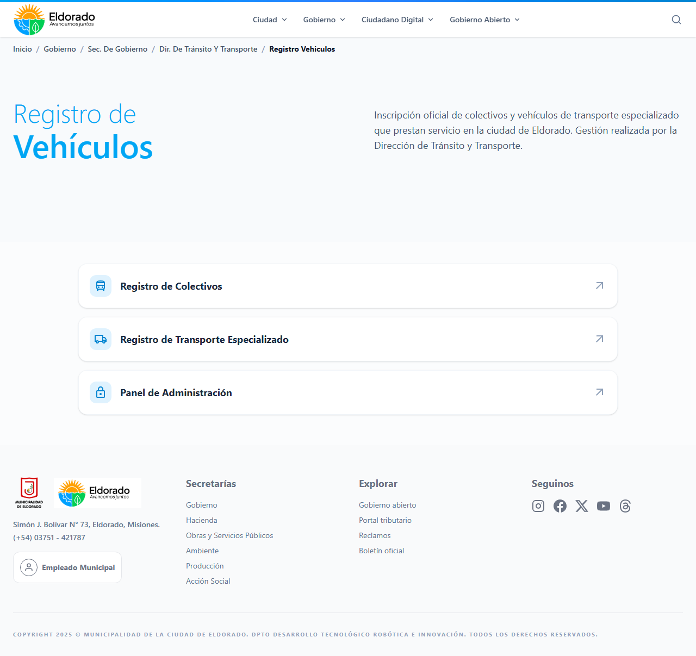
Index del módulo con las 3 secciones disponibles: Colectivos, Transporte Especializado y Panel de Administración.
Dirigirse a Registro de Colectivos. Si no hay sesion iniciada, aparecera una pantalla de Acceso restringido con un formulario de login. Tras autenticarse, se mostrara el formulario completo dividido en 3 secciones:
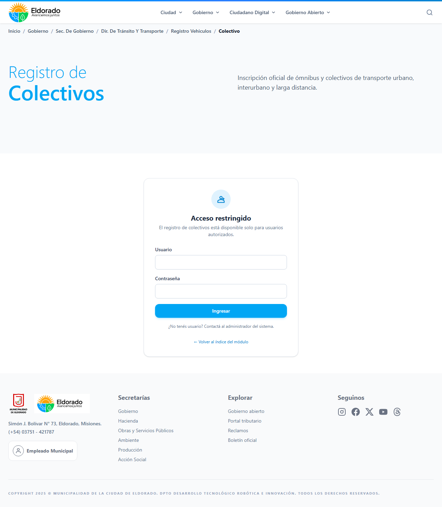
Sin sesión iniciada, la página de Colectivos muestra la pantalla "Acceso restringido" con un formulario de login.
A continuación, completar los datos del vehículo:
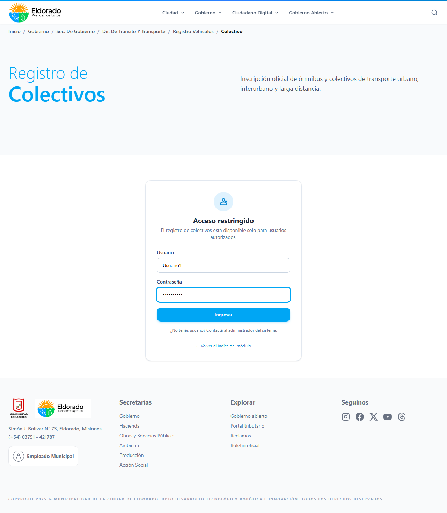
Tras autenticarse, la pantalla "Acceso restringido" se reemplaza por el formulario con sus 3 secciones.
Una vez completado, hacer clic en Guardar Registro:
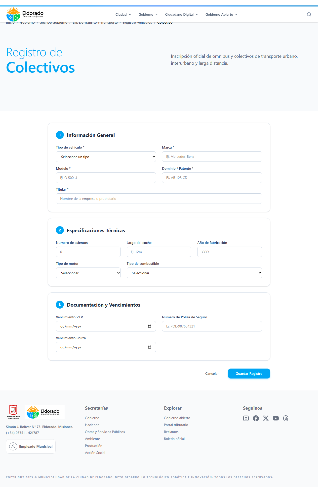
Formulario de Colectivos completo listo para enviar: Mercedes-Benz OF 1721, patente AB 123 CD, 42 asientos, etc.
Dirigirse a Registro de Transporte Especializado. El formulario se divide en 3 secciones más extensas:
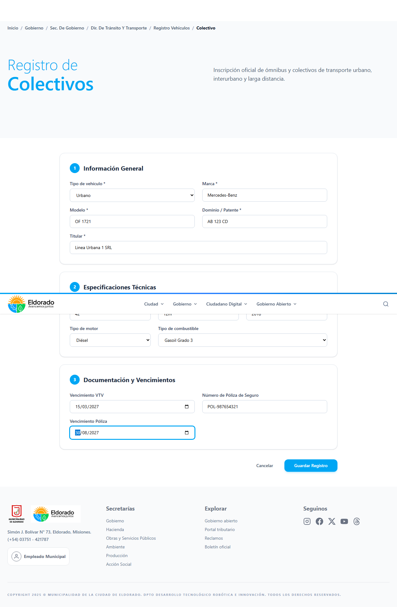
Confirmación visual de éxito. El mensaje muestra la patente y marca/modelo registrados. Hay un enlace para cargar otro colectivo.
Completar todos los campos obligatorios (marcados con *):
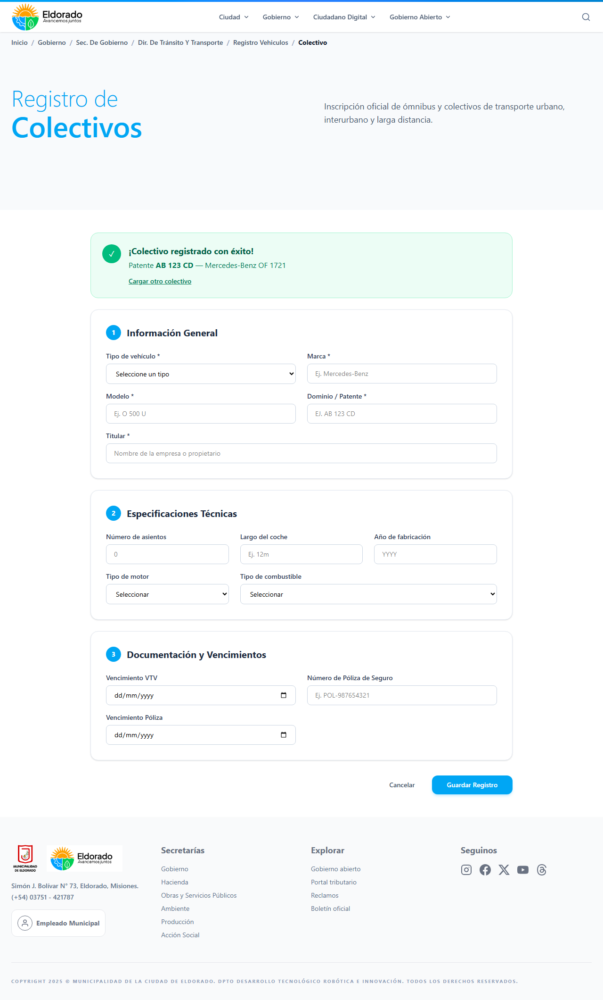
Sin sesión, la página de Transporte Especializado también requiere login. Misma pantalla de "Acceso restringido" con el mismo formulario.
Hacer clic en Guardar Registro:
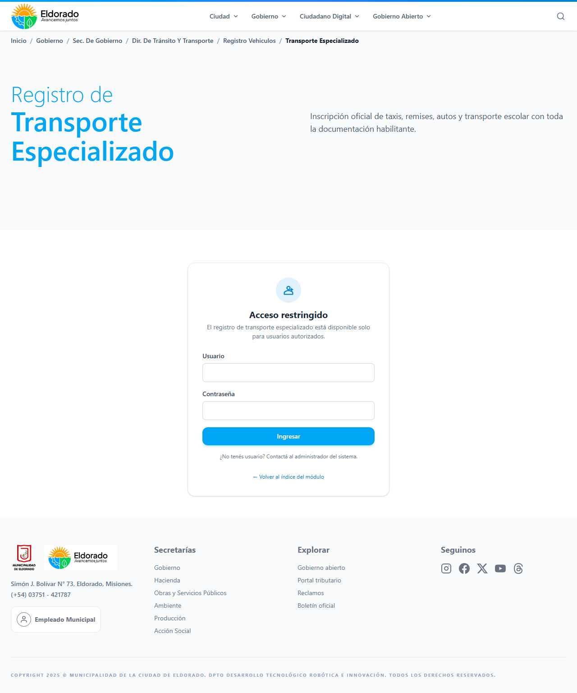
Ejemplo completo: Apellido Gonzalez, DNI 30123456, dominio AA 999 BB, Toyota Corolla, tipo servicio Taxi, Resolución RES-2026-042, etc.
Ir a Panel de Administración. La pantalla de login se muestra automáticamente:
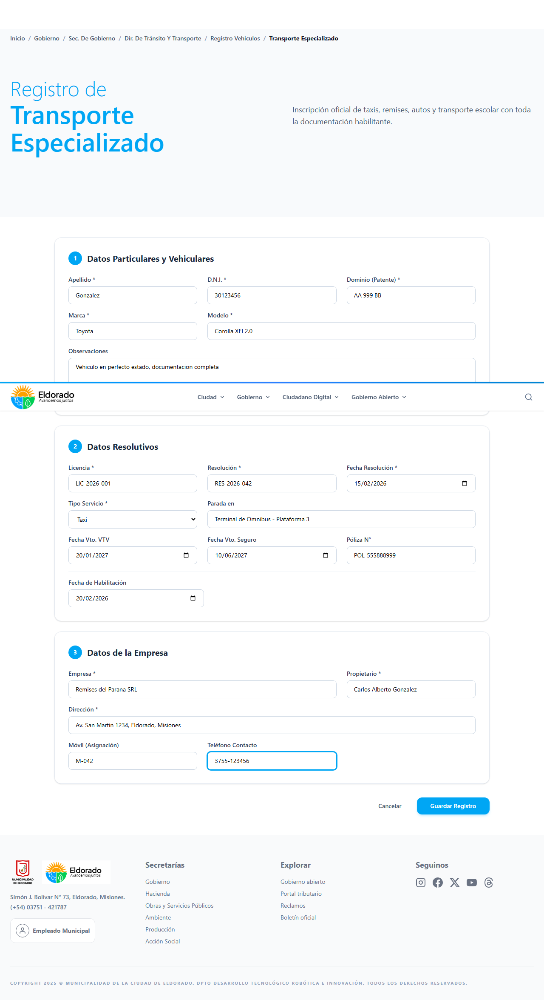
Confirmación: "Vehículo registrado con éxito — Dominio AA 999 BB — Toyota Corolla (taxi)".
Ingresar las credenciales provistas por el administrador del sistema:
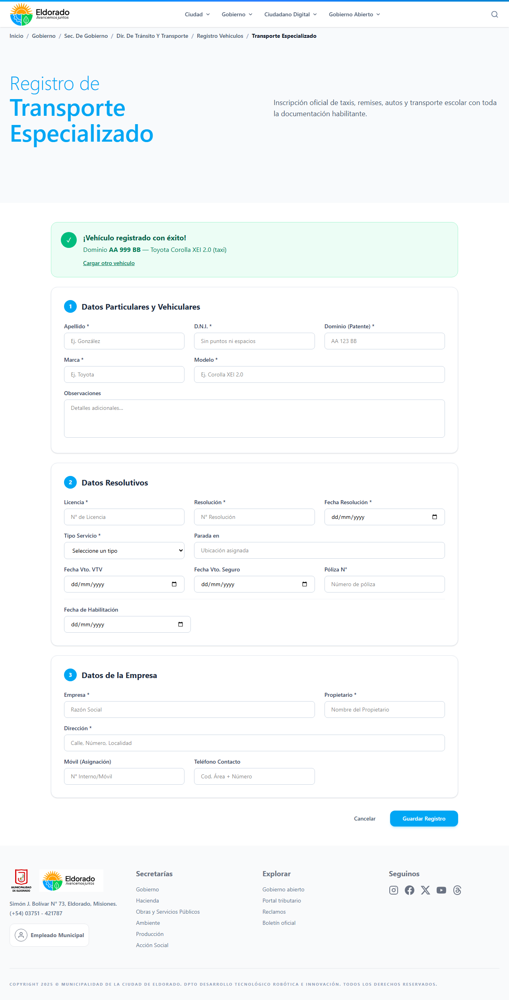
Panel de Administración — Tab "Colectivos" activo. Muestra la tabla con todos los colectivos registrados ordenados por fecha. Cada fila tiene su botón "Eliminar".
Tras hacer clic en Ingresar, se accede al panel principal con 4 pestañas:
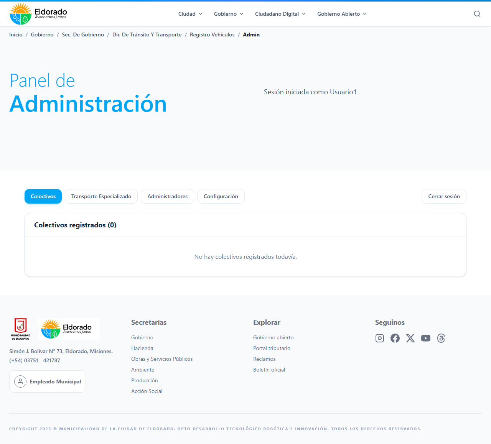
Tab "Administradores" — permite ver, crear y eliminar admins. Solo el admin principal (Usuario1) no puede ser eliminado.
En la pestaña Colectivos y Transporte Especializado podés:
Cambiar a la pestaña Transporte Especializado:
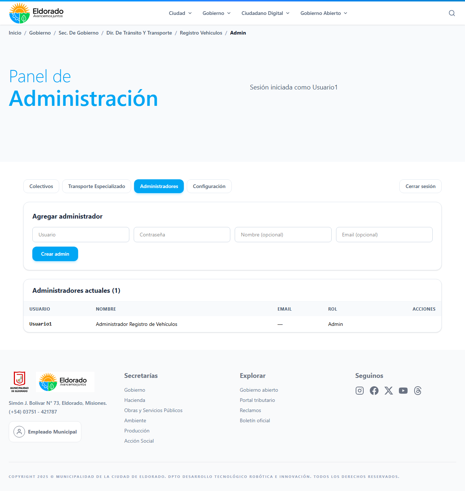
Tras cerrar sesión, vuelve a aparecer el formulario de login. La sesión autenticada se elimina del navegador.
La pestaña Administradores permite:
Usuario1).Completar los datos del nuevo admin:
Para crear un nuevo admin, completar los 4 campos (usuario, contraseña, nombre y email opcional) en el formulario superior y hacer clic en Crear admin. El nuevo usuario aparecerá inmediatamente en la lista inferior y ya podrá iniciar sesión.
Al hacer clic en Crear admin, el sistema valida los datos y crea el nuevo usuario:
Para salir del panel, hacer clic en Cerrar sesión arriba a la derecha. El sistema vuelve a la pantalla de login y la sesión se elimina del navegador.
La pestaña Configuración muestra el estado actual del módulo en formato JSON:
El estado del módulo se muestra en formato JSON: modulo_pausado, permitir_publico y notas. La configuración detallada se gestiona desde la base de datos.
Para salir del panel, hacer clic en Cerrar sesión arriba a la derecha. El sistema vuelve a la pantalla de login:
Para salir del panel, hacer clic en Cerrar sesión arriba a la derecha. El sistema vuelve a la pantalla de login y la sesión se elimina del navegador.
El módulo es de uso exclusivamente interno: solo personal autorizado con usuario y contraseña puede acceder a cualquier funcionalidad (registrar, listar, eliminar, gestionar admins).
| Endpoint | Método | Acceso |
|---|---|---|
/api/registro-vehiculos/colectivos | POST | Solo admin — registrar |
/api/registro-vehiculos/especializados | POST | Solo admin — registrar |
/api/registro-vehiculos/colectivos | GET | Público — listar |
/api/registro-vehiculos/especializados | GET | Público — listar |
/api/registro-vehiculos/config | GET | Público — estado del módulo |
/api/registro-vehiculos/colectivos/:id | DELETE | Solo admin |
/api/registro-vehiculos/especializados/:id | DELETE | Solo admin |
/api/registro-vehiculos/admins | GET/POST/DELETE | Solo admin |
/api/registro-vehiculos/auth/login | POST | Público — login |
La autenticación de administradores se realiza mediante header HTTP Authorization: Bearer <usuario>:<hash>, donde el hash se calcula con la función simpleHash sobre la contraseña. El navegador guarda la sesión en localStorage con un TTL de 8 horas.
Para la gestión de usuarios, solo el administrador principal (Usuario1) puede crear nuevos admins desde el panel, y la creación de un nuevo admin requiere estar autenticado.
Para reportar errores o solicitar nuevas funcionalidades, contactar al Departamento de Desarrollo Tecnológico de la Municipalidad de Eldorado.
Documentación generada el 10 de agosto de 2026 • Municipalidad de la Ciudad de Eldorado